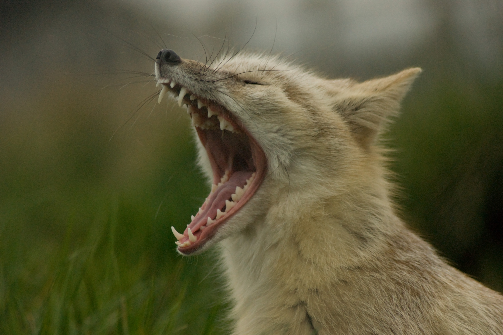
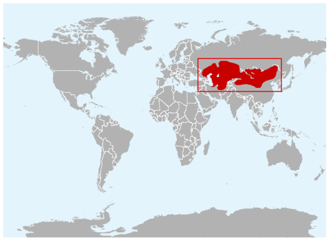
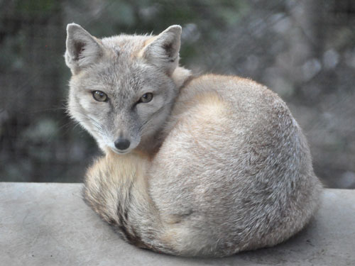
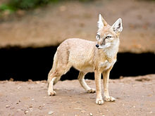

Description of the Corsac Fox
Appearance
 The corsac fox (Vulpes corsac), also known simply as a corsac, is a medium-sized fox, The Corsac fox is a medium-sized fox, with a head and body length of 45 to 65 cm, and a tail 19 to 35 cm long. Adults weigh from 1.6 to 3.2 kilograms. It has grey to yellowish fur over much of the body, with paler underparts and pale markings on the mouth, chin, and throat. During the winter, the coat becomes much thicker and silkier in texture, and is straw-grey in colour, with a darker line running down the back.
The corsac fox (Vulpes corsac), also known simply as a corsac, is a medium-sized fox, The Corsac fox is a medium-sized fox, with a head and body length of 45 to 65 cm, and a tail 19 to 35 cm long. Adults weigh from 1.6 to 3.2 kilograms. It has grey to yellowish fur over much of the body, with paler underparts and pale markings on the mouth, chin, and throat. During the winter, the coat becomes much thicker and silkier in texture, and is straw-grey in colour, with a darker line running down the back.
For a fox, it has small teeth and a wide skull. One source claims that this species can climb trees and has been domesticated in the past. It is reported to have keen eyesight and hearing and an acute sense of smell. It has a number of scent glands, some of which produce pungent odors, although not as extreme as those found in some other Vulpes species.
Habitat
Corsac foxes live in the steppes and semidesert of central and northeast Asia. They are found throughout Kazakhstan, Uzbekistan, and Turkmenistan, and through all except the northernmost regions of Mongolia. In the south, their range extends into the more northern parts of Iran, Tajikistan, Kyrgyzstan, Afghanistan, and China, and they can also be found in neighbouring regions of Russia.
These foxes inhabit open grassy steppes and semideserts, and avoid dense vegetation and mountainous regions. True deserts with drifting sands are also avoided, as are snowfields more than about 15 cm (6 in) deep. Corsac foxes generally stay far away from human disturbances.
Behaviour
As an adaption to the arid climate in which they live, corsac foxes can forego food and water for extended periods of time. The corsac fox is an opportunistic forager and hunter. Its diet varies throughout its range, but consists foremost of small and medium-sized vertebrates, insects and small rodents, such as voles, gerbils, jerboas, hamsters, and ground squirrels. It also feeds opportunistically on larger prey including hares and pikas. It scavenges for carrion and human refuse as well. Although predominantly carnivorous, it occasionally eats fruit and other vegetation, especially during winter when availability of animal prey is low.
The Corsac fox is a nocturnal and nomadic hunter of the steppes. It does not have a defended territory, and unlike some foxes, sometimes forms packs. Diurnal activity is more common at times when kits need to be fed and when food is scarce, as during the winter. Because it cannot hunt in deep snow, it either shelters in dens during harsh weather, or, in the northern parts of its range, it migrates up to 600 km south in the winter. It has been reported to follow herds of local antelope, relying on them to compress the snow as they pass. It dig its own dens, which are generally shallow, but also takes over the burrows of other animals, such as marmots, ground squirrels, or badgers. Dens may have several entrances, but are usually less than 1 metre deep. The burrow is shared between the social packs, with several dens and connecting holes, which resemble "corsac cities". They are excellent climbers, but are rather slow runners and could be caught easily by a dog. While they are reported to be nocturnal in the wild, in captivity they are very active during the day.